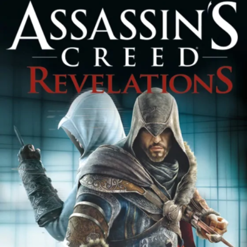

Assassins Creed (2007)

Assassin's Creed 2 (2009)

Assassin's Creed Brotherhood (2010)

Assassin's Creed Revelations (2011)

Assassin's Creed 3 (2012)

Assassin's Creed Origins (2017)
Assassin's Creed Syndicate (2015)
Assassin's Creed Unity (2014)

Assassin's Creed Rogue (2014)

Assassin's Creed Black Flag (2013)

Assassin's Creed Odyssey (2018)
Assassin's Creed Valhalla (2020)
Assassins Creed (2007)
Assassins Creed 2 (2009)
AC Brotherhood (2010)
AC Revelations (2011)
Assassins Creed 3 (2012)
Assassins Creed Black Flag (2013)
Assassins Creed Rogue (2014)
Assassins Creed Unity (2014)
Assassins Creed Syndicate (2015)
Assassins Creed Origins (2017)
Assassins Creed Odyssey (2018)

Assassins Creed Valhalla (2020)